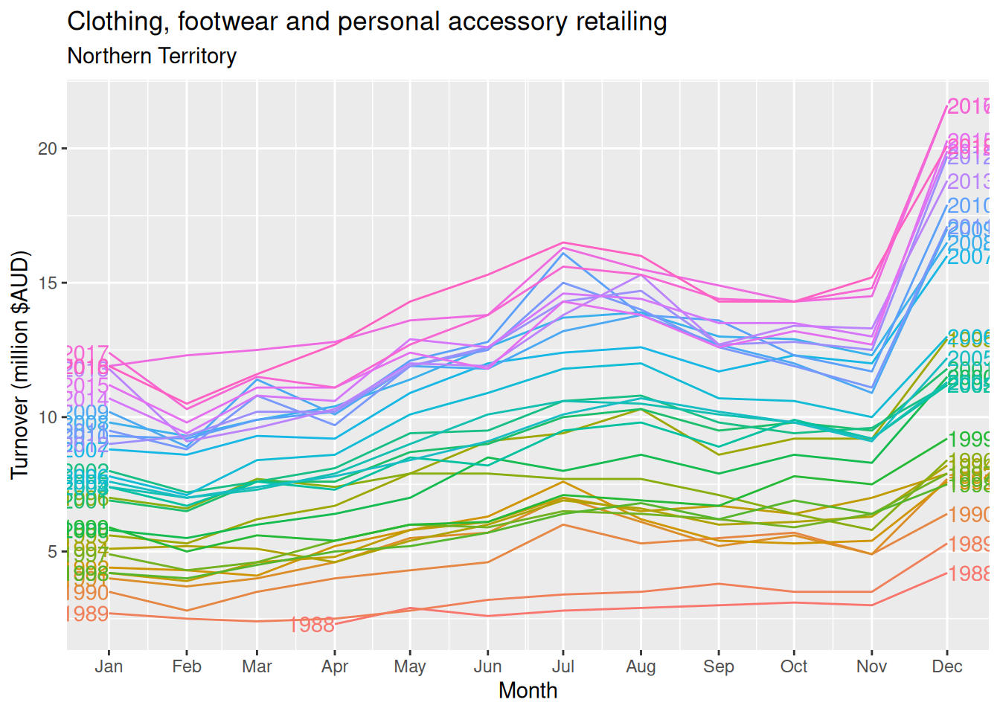
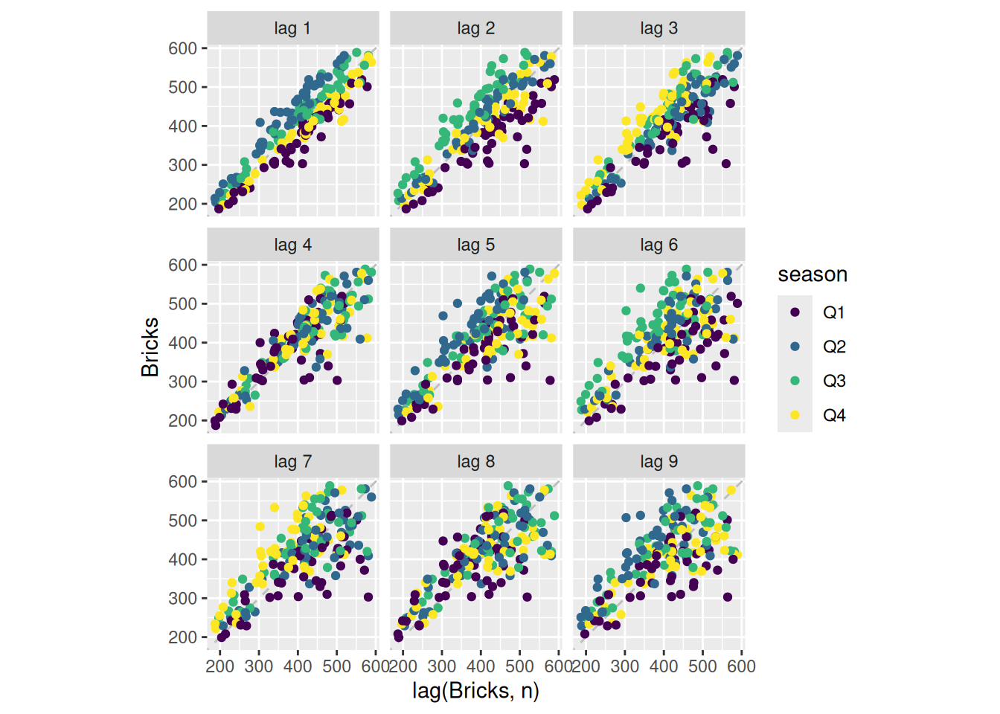
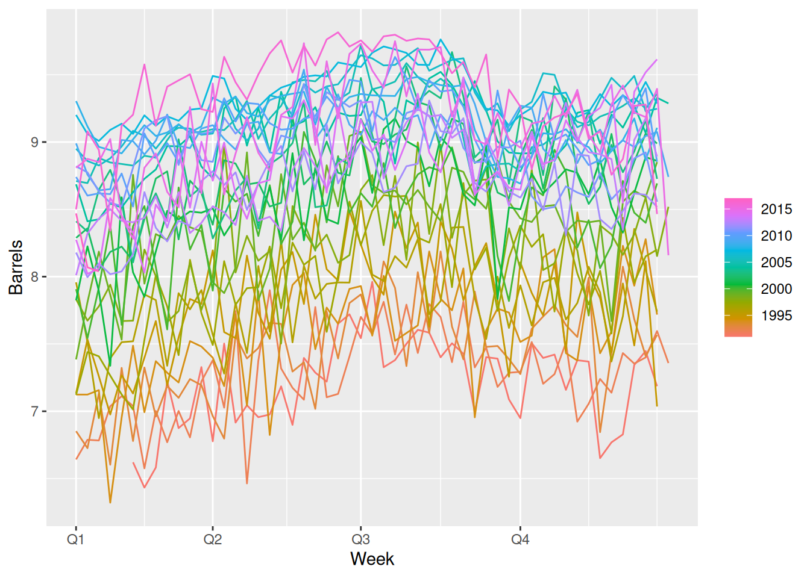
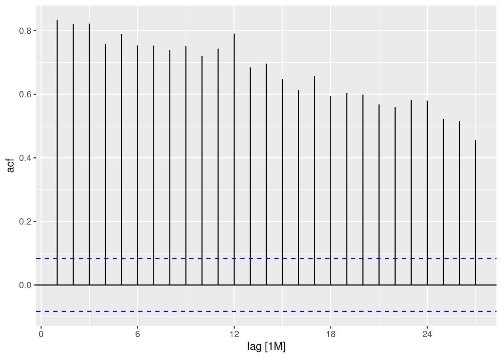

An upward trend is apparent until 1980, after which the number of clay bricks being produced starts to decline. A seasonal pattern is evident in this data. Some sharp drops in some quarters can also be seen.
Lynx
interval(pelt)
<interval[1]>
[1] 1Y
Observations are made once per year.
pelt |>autoplot(Lynx)
Canadian lynx trappings are cyclic, as the extent of peak trappings is unpredictable, and the spacing between the peaks is irregular but approximately 10 years.
Interval is daily. Looking closer at the data, we can see that the index is a Date variable. It also appears that observations occur only on trading days, creating lots of implicit missing values.
gafa_stock |>autoplot(Close)
Stock prices for these technology stocks have risen for most of the series, until mid-late 2018.
The four stocks are on different scales, so they are not directly comparable. A plot with faceting would be better.
Appears to have a daily pattern, where less electricity is used overnight. Also appears to have a working day effect (less demand on weekends and holidays).
Here the annual seasonality is clear, with high volatility in summer, and peaks in summer and winter. The weekly seasonality is also visible, but the daily seasonality is hidden due to the compression on the horizontal axis.
fpp3 2.10, Ex 2
Use filter() to find what days corresponded to the peak closing price for each of the four stocks in gafa_stock.
# A tsibble: 4 x 3 [!]
# Key: Symbol [4]
Symbol Date Close
<chr> <date> <dbl>
1 AAPL 2018-10-03 232.
2 AMZN 2018-09-04 2040.
3 FB 2018-07-25 218.
4 GOOG 2018-07-26 1268.
fpp3 2.10, Ex 3
Download the file tute1.csv from the book website, open it in Excel (or some other spreadsheet application), and review its contents. You should find four columns of information. Columns B through D each contain a quarterly series, labelled Sales, AdBudget and GDP. Sales contains the quarterly sales for a small company over the period 1981-2005. AdBudget is the advertising budget and GDP is the gross domestic product. All series have been adjusted for inflation.
# Without faceting:mytimeseries |>pivot_longer(-Quarter, names_to="Key", values_to="Value") |>ggplot(aes(x = Quarter, y = Value, colour = Key)) +geom_line()
fpp3 2.10, Ex 4
The USgas package contains data on the demand for natural gas in the US.
Install the USgas package.
Create a tsibble from us_total with year as the index and state as the key.
Plot the annual natural gas consumption by state for the New England area (comprising the states of Maine, Vermont, New Hampshire, Massachusetts, Connecticut and Rhode Island).
The following package(s) will be installed:
- USgas [0.1.2]
These packages will be installed into "~/git/Teaching/af/renv/library/linux-neon-noble/R-4.4/x86_64-pc-linux-gnu".
# Installing packages --------------------------------------------------------
- Installing USgas ... OK [linked from cache]
Successfully installed 1 package in 6.9 milliseconds.
library(USgas)us_tsibble <- us_total |>as_tsibble(index=year, key=state)# For each stateus_tsibble |>filter(state %in%c("Maine", "Vermont", "New Hampshire", "Massachusetts","Connecticut", "Rhode Island")) |>autoplot(y/1e3) +labs(y ="billion cubic feet")
fpp3 2.10, Ex 5
Download tourism.xlsx from the book website and read it into R using read_excel() from the readxl package.
Create a tsibble which is identical to the tourism tsibble from the tsibble package.
Find what combination of Region and Purpose had the maximum number of overnight trips on average.
Create a new tsibble which combines the Purposes and Regions, and just has total trips by State.
# A tsibble: 24,320 x 5 [1Q]
# Key: Region, State, Purpose [304]
Quarter Region State Purpose Trips
<qtr> <chr> <chr> <chr> <dbl>
1 1998 Q1 Adelaide South Australia Business 135.
2 1998 Q2 Adelaide South Australia Business 110.
3 1998 Q3 Adelaide South Australia Business 166.
4 1998 Q4 Adelaide South Australia Business 127.
5 1999 Q1 Adelaide South Australia Business 137.
6 1999 Q2 Adelaide South Australia Business 200.
7 1999 Q3 Adelaide South Australia Business 169.
8 1999 Q4 Adelaide South Australia Business 134.
9 2000 Q1 Adelaide South Australia Business 154.
10 2000 Q2 Adelaide South Australia Business 169.
# ℹ 24,310 more rows
tourism
# A tsibble: 24,320 x 5 [1Q]
# Key: Region, State, Purpose [304]
Quarter Region State Purpose Trips
<qtr> <chr> <chr> <chr> <dbl>
1 1998 Q1 Adelaide South Australia Business 135.
2 1998 Q2 Adelaide South Australia Business 110.
3 1998 Q3 Adelaide South Australia Business 166.
4 1998 Q4 Adelaide South Australia Business 127.
5 1999 Q1 Adelaide South Australia Business 137.
6 1999 Q2 Adelaide South Australia Business 200.
7 1999 Q3 Adelaide South Australia Business 169.
8 1999 Q4 Adelaide South Australia Business 134.
9 2000 Q1 Adelaide South Australia Business 154.
10 2000 Q2 Adelaide South Australia Business 169.
# ℹ 24,310 more rows
The aus_arrivals data set comprises quarterly international arrivals (in thousands) to Australia from Japan, New Zealand, UK and the US. Use autoplot(), gg_season() and gg_subseries() to compare the differences between the arrivals from these four countries. Can you identify any unusual observations?
aus_arrivals |>autoplot(Arrivals)
Generally the number of arrivals to Australia is increasing over the entire series, with the exception of Japanese visitors which begin to decline after 1995. The series appear to have a seasonal pattern which varies proportionately to the number of arrivals. Interestingly, the number of visitors from NZ peaks sharply in 1988. The seasonal pattern from Japan appears to change substantially.
The seasonal pattern of arrivals appears to vary between each country. In particular, arrivals from the UK appears to be lowest in Q2 and Q3, and increase substantially for Q4 and Q1. Whereas for NZ visitors, the lowest period of arrivals is in Q1, and highest in Q3. Similar variations can be seen for Japan and US.
aus_arrivals |>gg_subseries(Arrivals)

The subseries plot reveals more interesting features. It is evident that whilst the UK arrivals is increasing, most of this increase is seasonal. More arrivals are coming during Q1 and Q4, whilst the increase in Q2 and Q3 is less extreme. The growth in arrivals from NZ and US appears fairly similar across all quarters. There exists an unusual spike in arrivals from the US in 1992 Q3.
Unusual observations:
2000 Q3: Spikes from the US (Sydney Olympics arrivals)
2001 Q3-Q4 are unusual for US (9/11 effect)
1991 Q3 is unusual for the US (Gulf war effect?)
fpp3 2.10, Ex 7
Monthly Australian retail data is provided in aus_retail. Select one of the time series as follows (but choose your own seed value):
The data features a non-linear upward trend and a strong seasonal pattern. The variability in the data appears proportional to the amount of turnover (level of the series) over the time period.
Strong seasonality is evident in the season plot. Large increases in clothing retailing can be observed in December (probably a Christmas effect). There is also a peak in July that appears to be getting stronger over time. 2016 had an unusual pattern in the first half of the year.
Use the following graphics functions: autoplot(), gg_season(), gg_subseries(), gg_lag(), ACF() and explore features from the following time series: “Total Private” Employed from us_employment, Bricks from aus_production, Hare from pelt, “H02” Cost from PBS, and us_gasoline.
Can you spot any seasonality, cyclicity and trend?
In all of these plots, the trend is so dominant that it is hard to see anything else. We need to remove the trend so we can explore the other features of the data.
Brick production in Australia
aus_production |>autoplot(Bricks)
A positive trend in the first 20 years, and a negative trend in the next 25 years. Strong quarterly seasonality, with some cyclicity – note the recessions in the 1970s and 1980s.
aus_production |>gg_season(Bricks)

Brick production tends to be lowest in the first quarter and peak in either quarter 2 or quarter 3.
aus_production |>gg_subseries(Bricks)
The decrease in the last 25 years has been weakest in Q1.
aus_production |>gg_lag(Bricks, geom='point')
aus_production |>ACF(Bricks) |>autoplot()
The seasonality shows up as peaks at lags 4, 8, 12, 16, 20, …. The trend is seen with the slow decline on the positive side.
Snow hare trappings in Canada
pelt |>autoplot(Hare)
There is some cyclic behaviour with substantial variation in the length of the period.
pelt |>gg_lag(Hare, geom='point')
pelt |>ACF(Hare) |>autoplot()
The cyclic period seems to have an average of about 10 (due to the local maximum in ACF at lag 10).
H02 sales in Australia
There are four series corresponding to H02 sales, so we will add them together.
A positive trend with strong monthly seasonality, dropping suddenly every February.
h02 |>gg_season(Cost)
h02 |>gg_subseries(Cost)
The trends have been greater in the higher peaking months – this leads to increasing seasonal variation.
h02 |>gg_lag(Cost, geom='point', lags=1:16)

h02 |>ACF(Cost) |>autoplot()
The large January sales show up as a separate cluster of points in the lag plots. The strong seasonality is clear in the ACF plot.
US gasoline sales
us_gasoline |>autoplot(Barrels)
A positive trend until 2008, and then the global financial crisis led to a drop in sales until 2012. The shape of the seasonality seems to have changed over time.
us_gasoline |>gg_season(Barrels)
There is a lot of noise making it hard to see the overall seasonal pattern. However, it seems to drop towards the end of quarter 4.
us_gasoline |>gg_subseries(Barrels)
The blue lines are helpful in seeing the average seasonal pattern.
The seasonality is seen if we increase the lags to at least 2 years (approx 104 weeks)
fpp3 2.10, Ex 9
The following time plots and ACF plots correspond to four different time series. Your task is to match each time plot in the first row with one of the ACF plots in the second row.
1-B, 2-A, 3-D, 4-C
fpp3 2.10, Ex 10
The aus_livestock data contains the monthly total number of pigs slaughtered in Victoria, Australia, from Jul 1972 to Dec 2018. Use filter() to extract pig slaughters in Victoria between 1990 and 1995. Use autoplot and ACF for this data. How do they differ from white noise? If a longer period of data is used, what difference does it make to the ACF?
vic_pigs <- aus_livestock |>filter(Animal =="Pigs", State =="Victoria", between(year(Month), 1990, 1995))vic_pigs
# A tsibble: 72 x 4 [1M]
# Key: Animal, State [1]
Month Animal State Count
<mth> <fct> <fct> <dbl>
1 1990 Jan Pigs Victoria 76000
2 1990 Feb Pigs Victoria 78100
3 1990 Mar Pigs Victoria 77600
4 1990 Apr Pigs Victoria 84100
5 1990 May Pigs Victoria 98000
6 1990 Jun Pigs Victoria 89100
7 1990 Jul Pigs Victoria 93500
8 1990 Aug Pigs Victoria 84700
9 1990 Sep Pigs Victoria 74500
10 1990 Oct Pigs Victoria 91900
# ℹ 62 more rows
vic_pigs |>autoplot(Count)

Although the values appear to vary erratically between months, a general upward trend is evident between 1990 and 1995. In contrast, a white noise plot does not exhibit any trend.
vic_pigs |>ACF(Count) |>autoplot()
The first 14 lags are significant, as the ACF slowly decays. This suggests that the data contains a trend. A white noise ACF plot would not usually contain any significant lags. The large spike at lag 12 suggests there is some seasonality in the data.
aus_livestock |>filter(Animal =="Pigs", State =="Victoria") |>ACF(Count) |>autoplot()
The longer series has much larger autocorrelations, plus clear evidence of seasonality at the seasonal lags of 12, 24, \dots.
fpp3 2.10, Ex 11
Use the following code to compute the daily changes in Google closing stock prices.
The tsibble needed re-indexing as trading happens irregularly. The new index is based only on trading days.
dgoog |>autoplot(diff)
dgoog |>ACF(diff, lag_max=100) |>autoplot()
There are some small significant autocorrelations out to lag 24, but nothing after that. Given the probability of a false positive is 5%, these look similar to white noise.